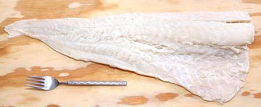

Salt Cod

[Bacalao (Basque, Spanish); Baccala (Italian); Bacalhau (Portuguese)]
Salt Cod was once an important staple in southwestern Europe, particularly
Spain, Portugal and Italy. Basque fishermen, who chased whales all the
way to Iceland in Medieval times, discovered the North Atlantic cod
fishery. They certainly "discovered" North America long before
Columbus, but nobody knows exactly when. Basque fishermen were not
literary people, and very secretive about their fishing grounds, and
nobody can understand Basque (Euskera) anyway, not even most Basques
today.
When Jacques Cartier "discovered" the St Lawrence River in 1535, he
reported there were 1000 Basque fishing boats already there. The
Basques invented the technique of salting cod, as it is done to this
day, and soaking it to make it palatable. They called it "bacalao".
The Norwegian Vikings had been freeze drying their cod, but that just
wasn't practical for people from more temperate climes.
The photo specimen was 19-1/2 inches long, 7 inches wide and 1-1/2
thick at its thickest point, weighing 2.3 pounds.
More on Fish - Dried, Salted & Smoked
Today, salting fish to preserve it is not necessary. It can be
frozen for storage and transportation, but the unique flavor and texture
of salt cod has made it a prized ingredient, particularly in the cuisines
of Spain, Portugal and Italy, as well as Canada and Brazil.
Buying:
Salt Cod can be found easily in practically
any one of the vast number of Italian grocery markets and delicatessens
we have here in North America. Be prepared, however, for the price.
The photo specimen, 2.3 pounds, was purchased from an Italian market in
Los Angeles for 2013 US $11.99 per pound. For many people this relegates
it to the realm of "special occasion" foods.
Supermarkets used to stock Lasco brand salt cod in wooden boxes in
the refrigerated displays. Today, I can find no evidence of it on the
Internet. I've also bought salt cod at one of the local Korean markets,
but they sell it skin-on, fins on and bones-in, making it much more
difficult to work with.
Substitute:
Recently Goya brand Salt Pollock has become
fairly common in refrigerated fish cases. Pollock is related to Cod, and
salted Pollock tastes very similar. It is a smaller fish with thinner
fillets which flake into smaller flakes, but at about 2019 US $5.95 /
pound it is quite a bit more affordable, and more available.
Storing:
Salt Cod should be tightly bagged and kept
refrigerated. That way it can be stored for up to a year. Freezing it
doesn't do a lot of good due to all the salt - it's never truly frozen
and will eventually become rancid, just like ham and other salt cured
meats.
Cooking:
First you have to soak it in water long enough
to leach out the salt - 2 to 2-1/2 days in the fridge, depending on
thickness. Change the water twice a day. I put it in a heat sealed
2-mil polyurethane bag and cut a corner off for each draining and
refilling, then re-seal. Once it's soaked, just follow the recipe.
A Faster Way: This method works well for recipes where
the Cod will be flaked apart.
- Soak in several changes of cool water for 5 or 6 hours at a cool
room temperatue. Drain.
- Place in a pot with water to cover well and bring it to a boil
(uncovered to prevent it foaming over). Drain. Repeat two times and
check if it is still too salty. If it is, repeat again.
- The fish is now fully cooked and can be used in salads, or added
to cooked dishes near the end of cooking.
sf_codsaltz* 130512 - www.clovegarden.com
©Andrew Grygus - agryg@clovegarden.com - Photos on this
page not otherwise credited are © cg1 -
Linking to and non-commercial use of this page permitted